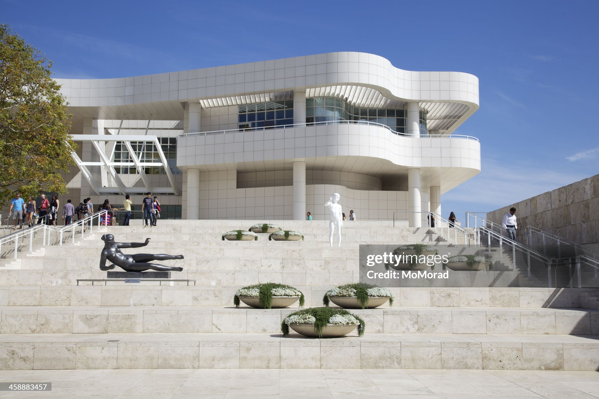
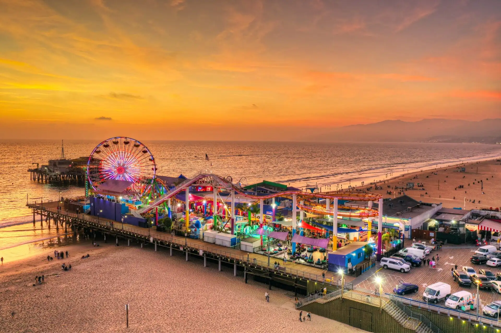
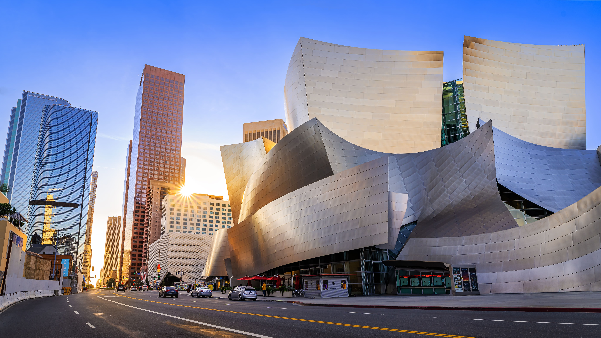
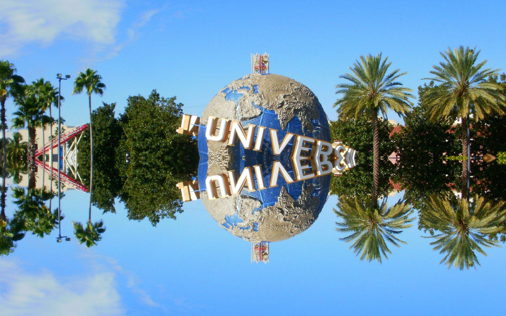
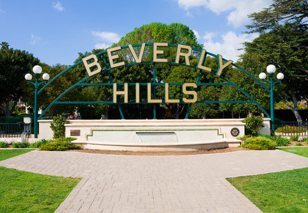

Quarter
A compact academic format that made every week feel fast, focused, and full.

UCLA Extension / Los Angeles / Personal Experience
Three months that started with academics and ended up changing how I think about scale, independence, and what a city can feel like.
Why UCLA
I chose UCLA because it promised more than a change of campus. It offered a different rhythm, a different academic environment, and a city with enough scale to make every day feel open-ended. Coming from Germany and a much smaller university setting, Los Angeles represented exactly the kind of contrast that makes an experience memorable.
What made the quarter meaningful was not only where I studied, but how completely the setting shifted my perspective. UCLA gave structure to the experience. Los Angeles gave it atmosphere.
At a Glance
A compact academic format that made every week feel fast, focused, and full.
Chosen across economics, supply chain, accounting, and web fundamentals.
Academic structure by day, city-scale discovery in every gap around it.
More independence, more perspective, and a much wider sense of what studying abroad can be.
Academics
The academic side of the quarter mattered because it grounded everything else. The courses were practical, varied, and easy to connect back to my degree, but they also gave the experience a sharper rhythm. They were the structure inside a city that always felt bigger than the schedule.
Economics
A wider view on how economies move, react, and create the kind of context that makes global decision-making easier to read.
Open course pageOperations
One of the clearest examples of how global systems, logistics, and business reality connect once theory meets scale.
Open course pageFinance
A more detailed look at decision-making through numbers, structure, and the logic behind how companies evaluate performance.
Open course pageCraft
The course that unexpectedly made the quarter feel even more tangible by connecting design, structure, and building on the web.
Open course pageCampus Life
Daily Atmosphere
UCLA felt less like a collection of buildings and more like a full environment with its own energy, routines, and momentum.
Coming from a much smaller university setting, the sheer size of UCLA immediately changed how campus life felt. There was always movement, always people, always something happening.
The international mix made everyday conversations interesting. The campus never felt narrow or isolated because so many backgrounds, perspectives, and ambitions met in the same spaces.
UCLA's appeal was not one single highlight. It was the feeling that the campus had enough depth to make every day look slightly different.
Sports culture, pride, and scale all added to the sense that UCLA was not only a place to study, but a place people genuinely identified with.
Los Angeles
UCLA gave the experience its center of gravity. Los Angeles gave it range. What made the city stay with me was not only the list of places, but how differently each part of it felt once you moved through it.

The coastline delivered exactly the version of Los Angeles people imagine, but with a pace that made it easy to stay longer than planned.
Quieter, calmer, and almost restorative compared to the louder edges of the city.
Two places where the city made the strongest visual impression, especially when the skyline started to flatten into light.

Each area carried a different texture, which made the city feel less like one place and more like a shifting collection of worlds.
The kind of coastal distance that made the quarter briefly feel slower, quieter, and more cinematic.
Highlights

Shared Moments
Short-form media
The original social posts still work best as supporting material rather than main-stage content. They remain part of the story, but not the whole presentation.
Reflection
Looking back, UCLA was not memorable because everything was easy. The quarter asked for adaptation: a different academic system, a different city scale, a different sense of everyday routine. That friction was part of what made it matter.
What I took away most was perspective. Living and studying in Los Angeles made me more independent, more open, and more aware of how strongly place shapes experience. The courses were important. The city was important. But the combination of both is what turned the quarter into something that still feels larger than a semester abroad.

End of the Quarter
A quarter in Los Angeles that started as an academic exchange and ended up feeling much more personal, much more visual, and much more formative than expected.